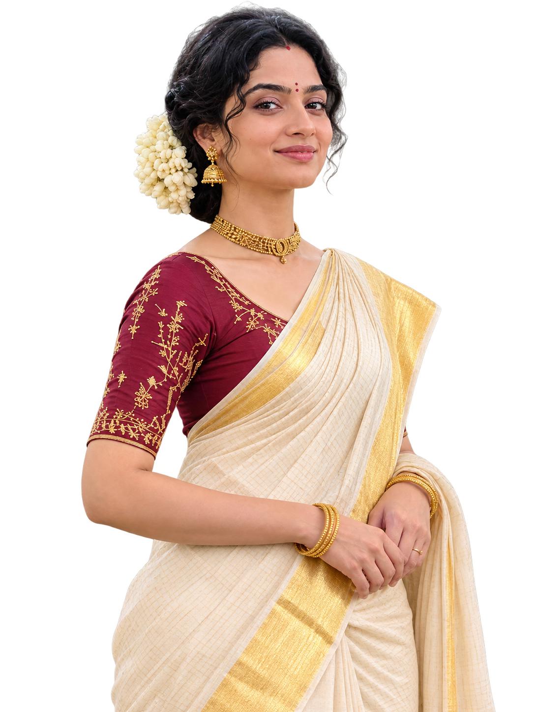
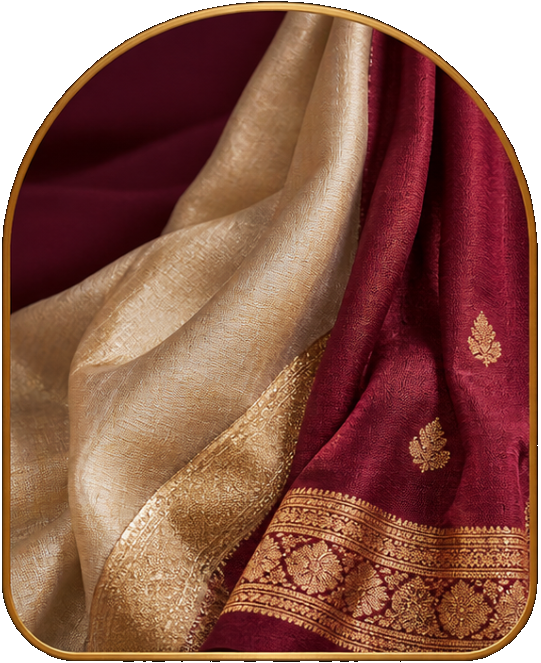
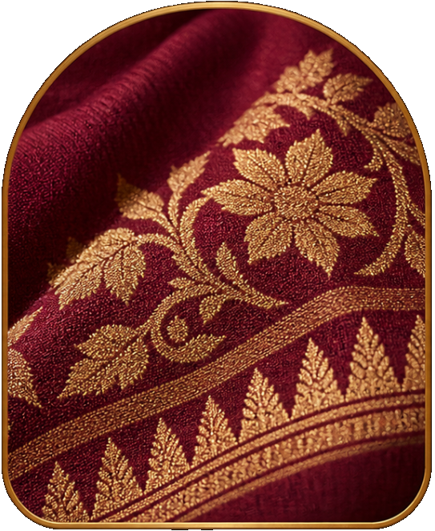
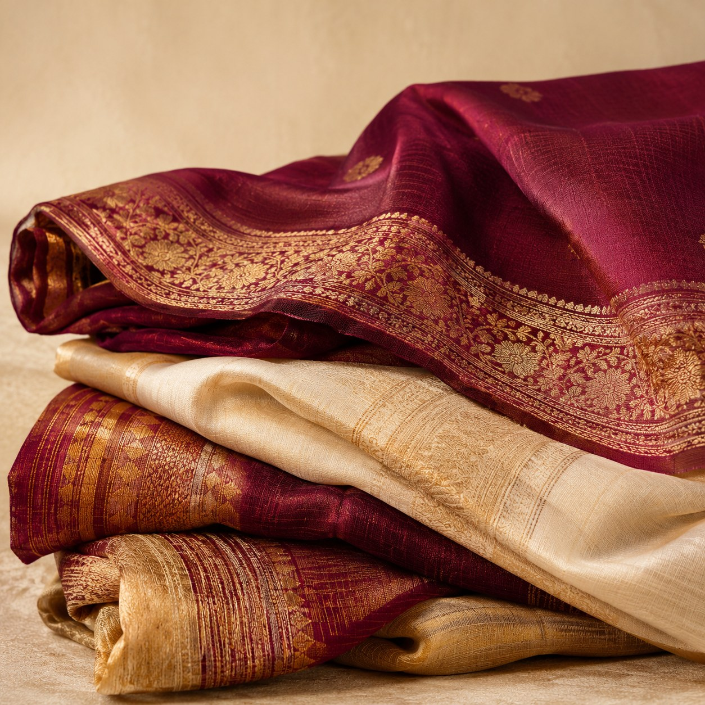
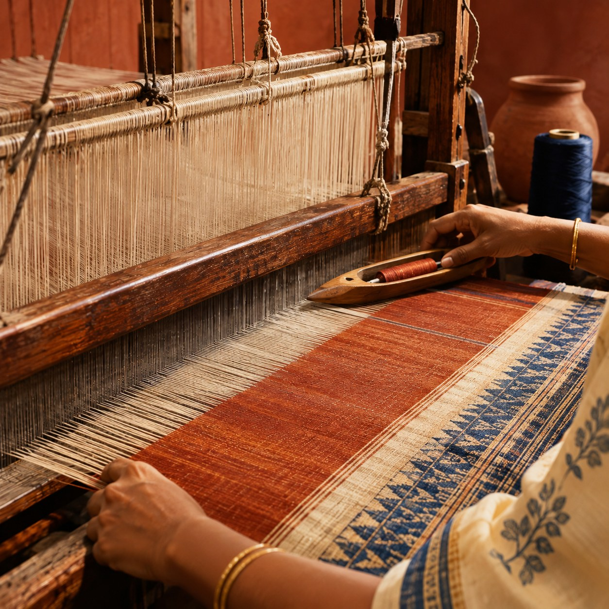
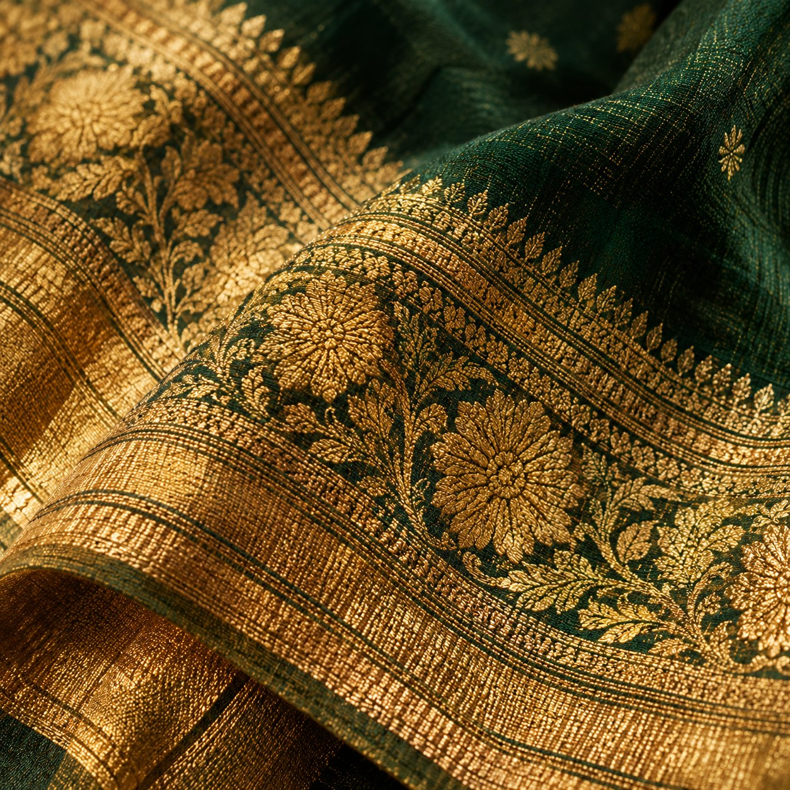
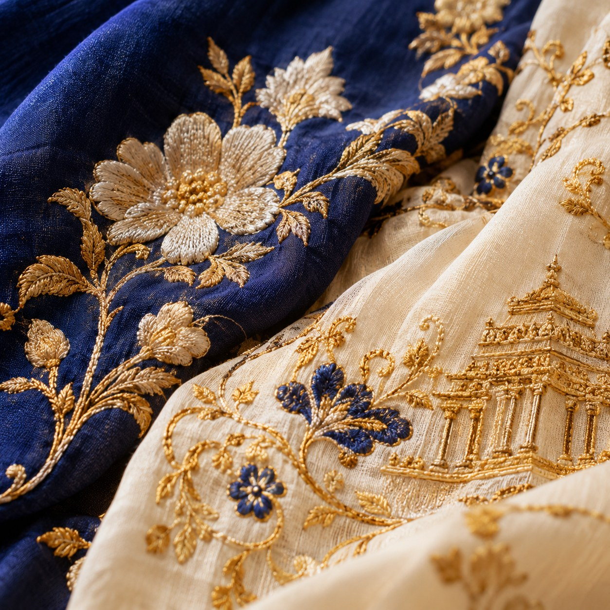
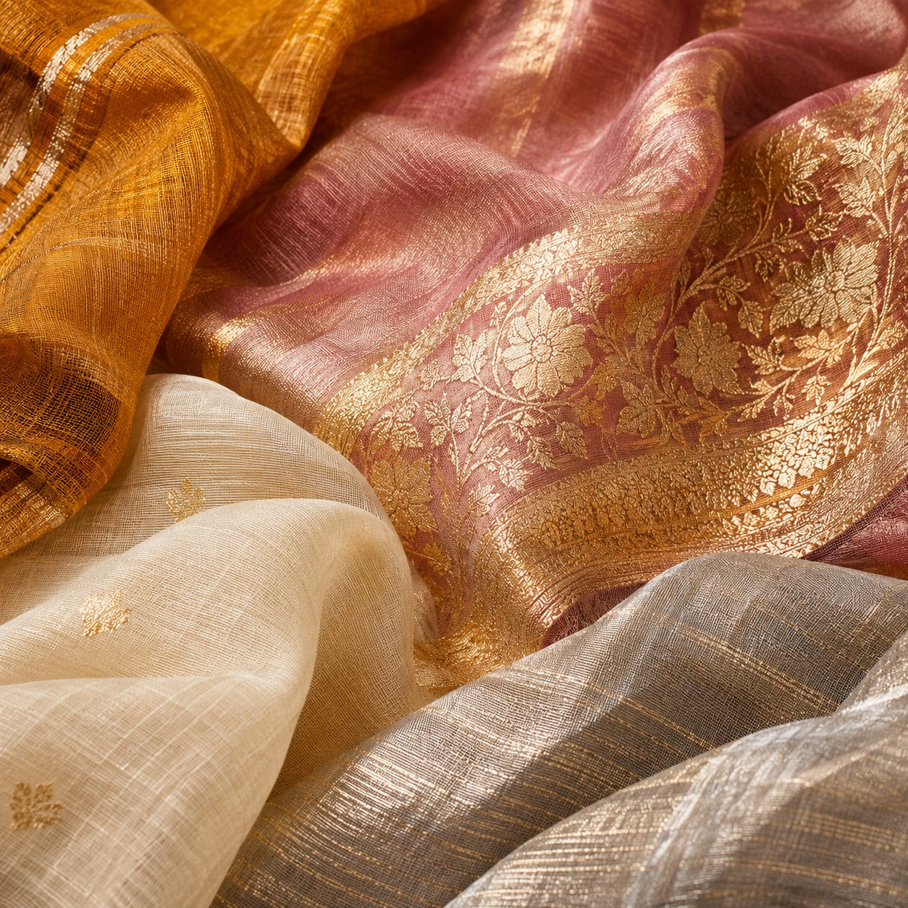
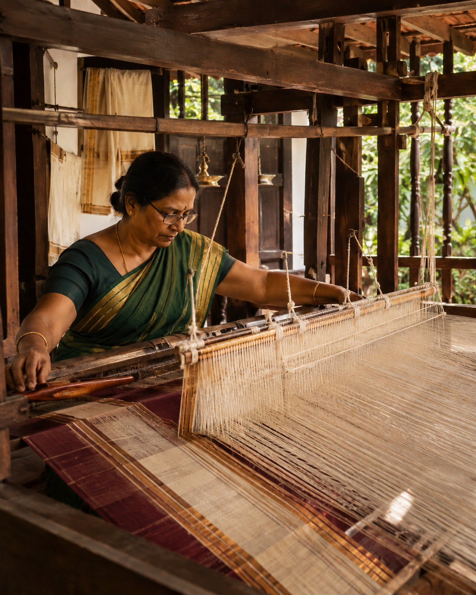

★★★★★
“The saree drapes so beautifully and the zari border feels truly special. I wore it for Onam and received compliments all day. It feels like a piece from a family heirloom.”Anjana M. ✔
Handloom Sarees · Made in Kerala
Sarees woven in the spirit of Kerala's looms — soft cottons, shimmering kasavu and rich silks, finished with fine zari for every celebration and every day.


Kasavu, cotton, tissue & silk.
Shop Fabric →Onam, Vishu, weddings & everyday.
Shop Occasion →
Zari borders, temple motifs & florals.
Shop Pattern →Welcome to Vellura
Born in Kerala, Vellura honours the hands behind every handloom saree. We bring together traditional weaves, gold threadwork and quiet modern elegance — sarees made to be worn, loved and passed on.
New In Arrivals
Handloom sarees in soft, breathable fabrics with delicate zari borders — designed in Kerala for the moments that matter.

Free Delivery Across IndiaOn orders over ₹2,999
Easy ExchangesHassle-free 7-day exchange
Handloom AuthenticWoven by skilled artisans
Secure PaymentsUPI, cards & net banking
Craftsmanship
From the first thread on the loom to the last stitch of the border, every Vellura saree carries the patience of Kerala's weaving tradition.

Slow, rhythmic weaving on traditional looms for fabric that breathes.

Fine gold thread woven into signature kasavu-style borders.

Delicate floral and temple-inspired motifs, worked by hand.

Soft cottons, lustrous silks and airy tissue for every season.
Latest Collection
Carefully curated sarees to keep your wardrobe graceful, versatile and rooted in tradition.

Kerala’s handloom heritage, crafted by skilled hands and carried forward with care.
Our Story & Heritage
Vellura began with a simple love for the Indian saree — the way it drapes, the way it carries a family's memories, and the hands that create it. From Kerala, we work with weavers and artisans to bring handloom sarees that feel both timeless and contemporary.
We believe in unhurried, thoughtful craft: natural fibres, fine zari, honest colours and designs that honour tradition without feeling dated.
Customer Favourites
The sarees our customers return to — tried, tested and loved at every celebration.
Customer Stories
“The saree drapes so beautifully and the zari border feels truly special. I wore it for Onam and received compliments all day. It feels like a piece from a family heirloom.”Anjana M. ✔
“I wore it to a family wedding and it stayed light and comfortable all day. The green border is understated, and the cotton only gets softer with every wash. A saree I will keep for years.”Meera K. ✔
“The tissue drapes like a dream and the zari catches the light without ever looking loud. It arrived exactly as pictured, wrapped with so much care. I have already ordered one for my sister.”Divya R. ✔
Join the Vellura Family
Be the first to see new weaves, festive collections and private previews, delivered with the warmth of Kerala.
Unsubscribe anytime. We respect your privacy.